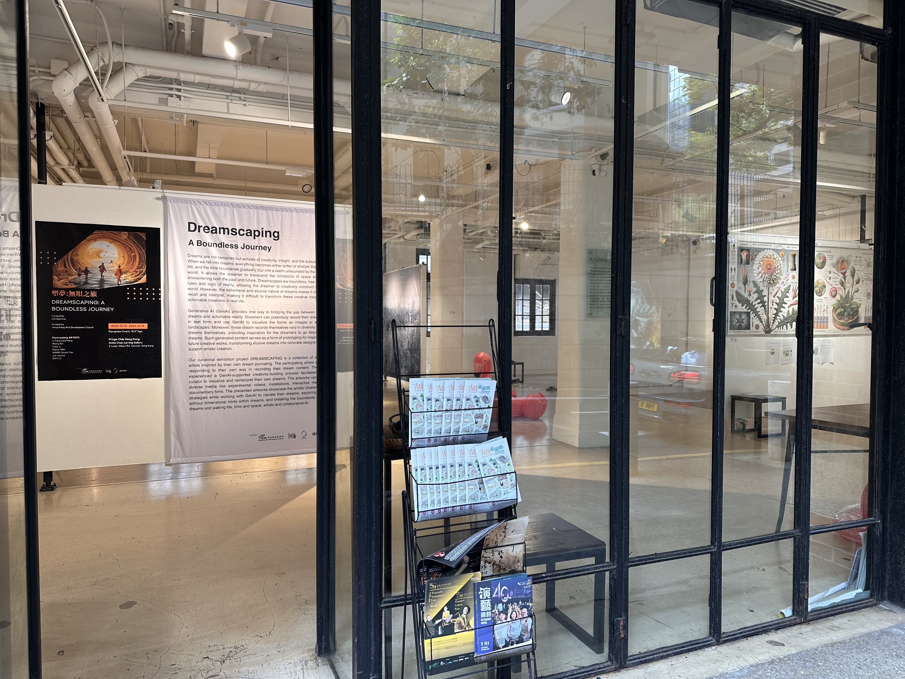
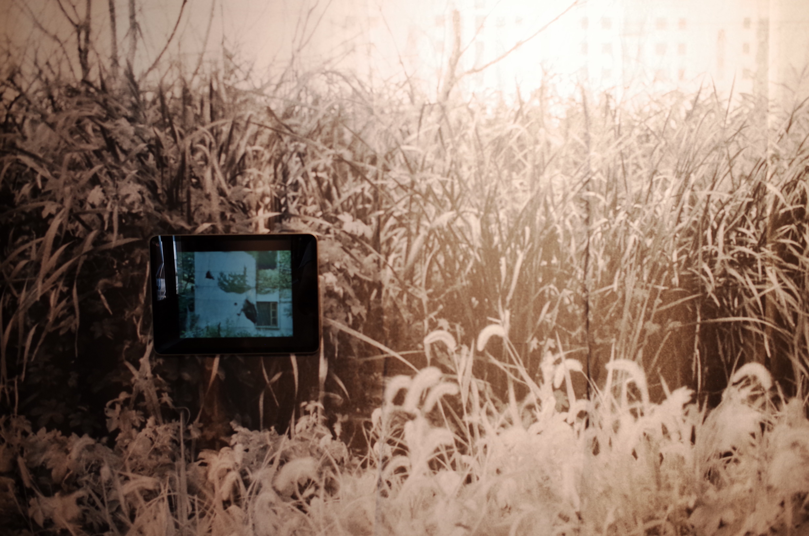
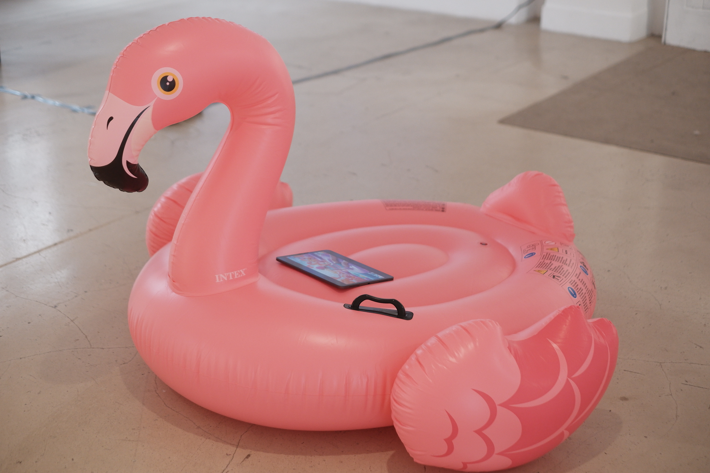
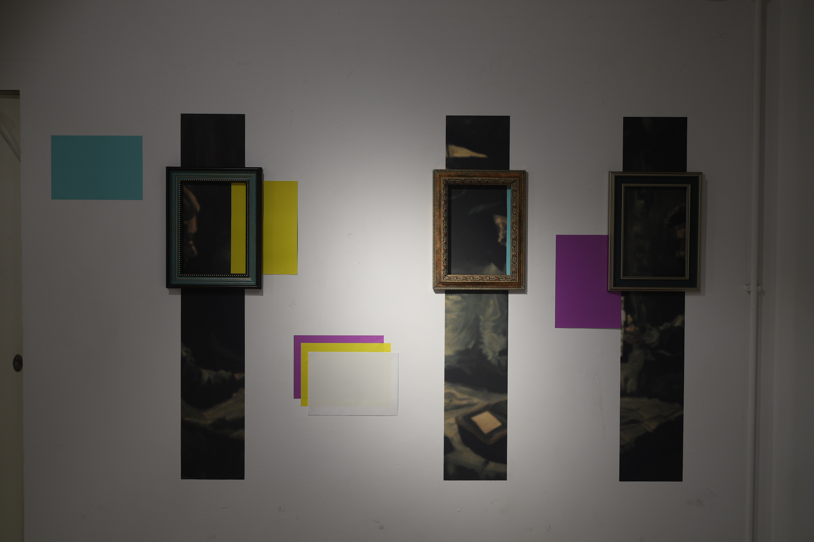
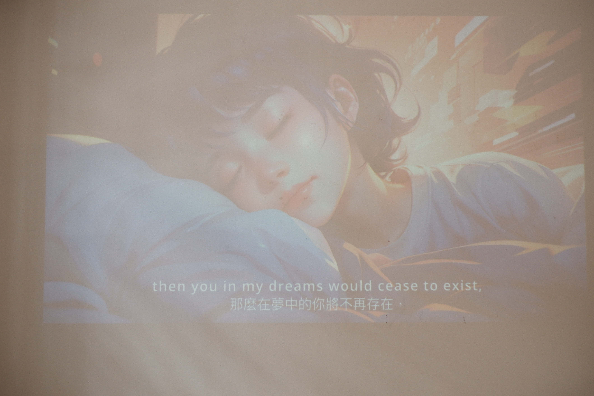
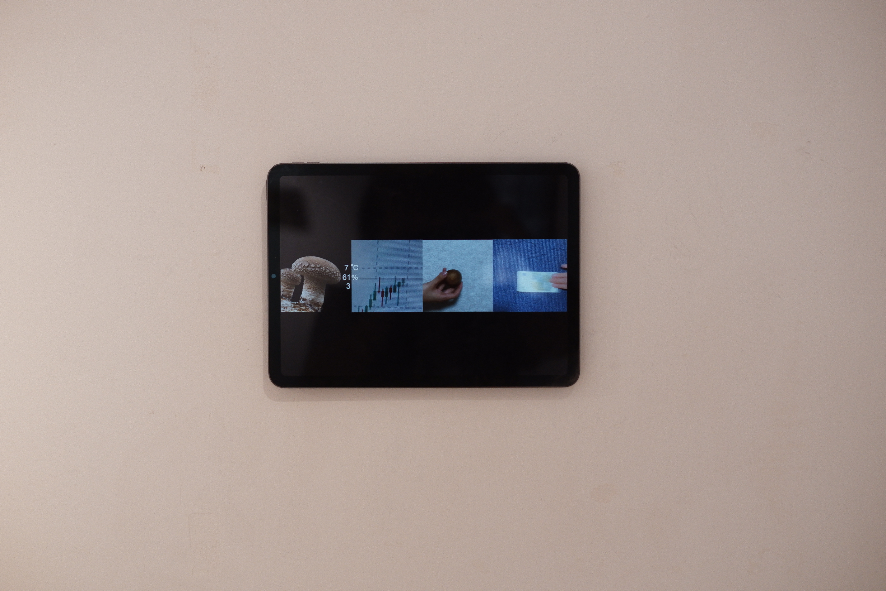
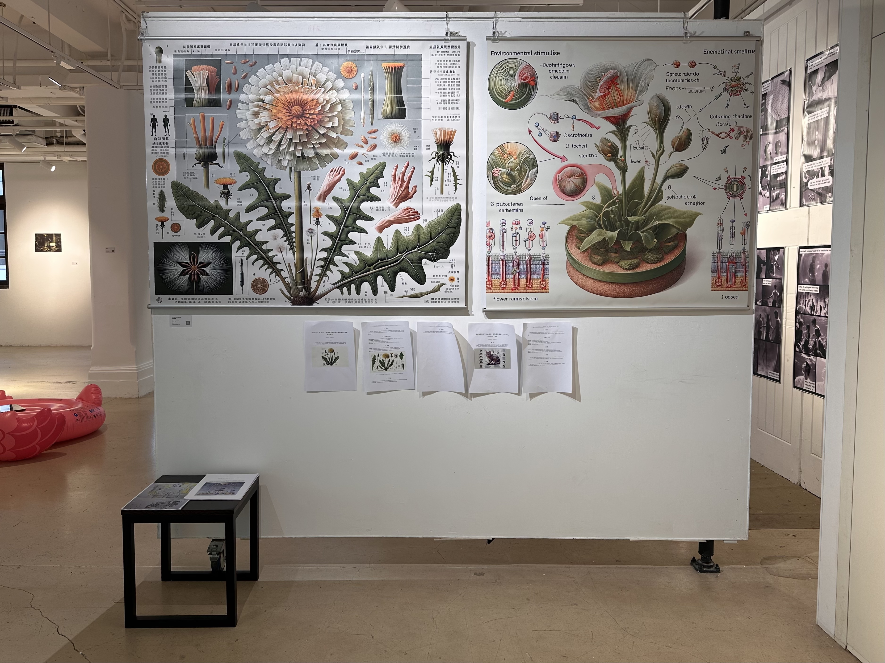
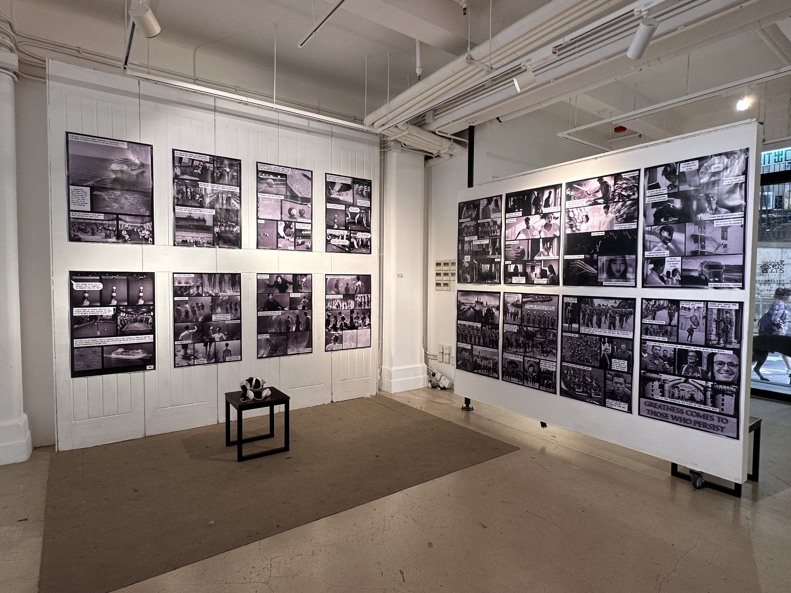

Dreamscaping
Dreamscaping: A Boundless Journey
Exhibition
2024/10
Anita Chan Lai-ling Gallery at Fringe Club, Central, Hong Kong
Dreams are not fantasies but echoes of creativity, insight, and the subconscious. When we fall into dreams, everything becomes either softer or sharper than in real life, and the time boundaries gradually blur into a realm unbounded by the tangible world. It allows the dreamer to transcend the limitations of space and time, encountering both the past and future. Dreamscapes are boundless, free from the rules and logic of reality, allowing the dreamer to creatively construct her own world. However, the ephemeral and elusive nature of dreams makes it difficult to recall and interpret, making it difficult to transform these creative insights into actionable creations in real life.
Generative AI (GenAI) provides one way to bridging the gap between creative dreams and actionable reality. Dreamers can potentially record their dream diary in text form and use GenAI to visualize the forms as images or even 3D landscapes. Moreover, these dream records themselves vary in diversity from the dreams themselves, providing inspiration for the dreamers to go beyond their dreams. Such generated content serves as a form of prototyping for inspiration for future creative works, transforming elusive dreams into concrete designs that can support artistic creation.
Our curatorial exhibition project DREAMSCAPING is a collection of works by artists inspired by their own dream journaling. The participating artists are each responding to their own way in recording their dream content. The artists experienced a GenAI-supported creativity-building process facilitated by the curator to visualize and reinterpret their own dreams. The artworks vary across diverse media like experimental videos, installations, interactive media and documentary films. The presented artworks showcase the artists’ challenges and strategies while working with GenAI to narrate their dreams, exploring a world without dimensional limits within dreams, and breaking the boundaries between dreams and waking life, time and space, artists and collaborative AI.
Curator: LIU Sijia Star
Project Advisor: Richard William ALLEN, RAY LC
Participating Artists: Li Yang Hua Meng, Wang Xin, Chen Li, Marty Miller, Wang Shuxin Yan, Lan Junxue, RAY LC
Supported by:
HKADC, Fringe Club, StudioForNarrativeSpaces, Networkparty
Exhibition Website: https://sites.google.com/view/dreamscapingborderlessjourney/home








